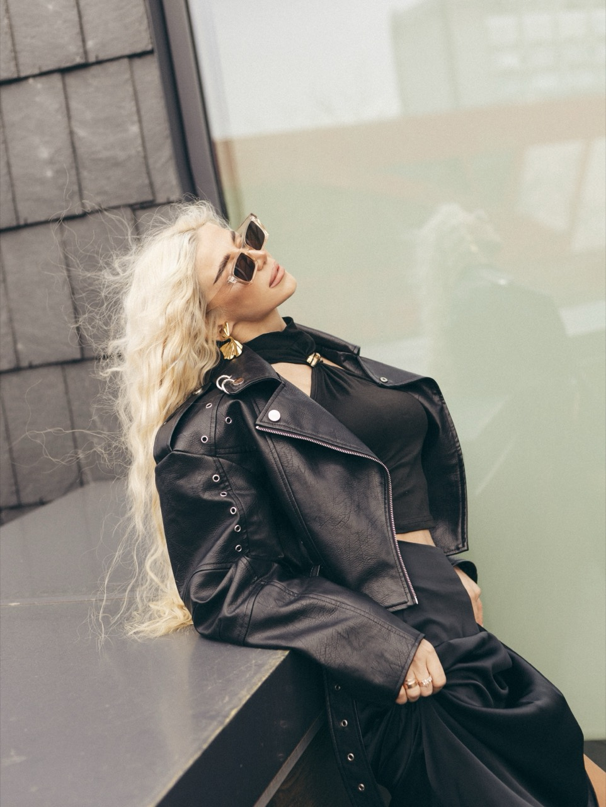

1 клас
Перші пісні
Спів починається зі школи. Дар передався від бабусі — увесь рід Юдицьких співочий і творчий, тому іншого шляху бути й не могло.
Біографія
Від мальовничої Новгород-Сіверщини до сцен Мальдівів та Емiратів — і назад, до Чернігова, де все почалося по-справжньому.
Привіт! Я — Альона Юдицька (YUDYTSKA). Мій творчий шлях розпочався з мальовничої Новгород-Сіверщини, а понад 17 років моїм головним натхненням та домом є Чернігів. Саме тут сформувалася моя доросла музична історія, сповнена сценічного досвіду, відвертих текстів та локальної підтримки слухачів.
Я співаю з 1 класу школи, адже любов до музики завжди була невід'ємною частиною мого життя. Цей дар передався мені від бабусі, та й загалом увесь наш рід Юдицьких співочий і творчий, тому іншого шляху для мене бути й не могло.
Сьогодні YUDYTSKA — це повністю незалежний проєкт, який я будую самостійно. Я сама заробляю на свою творчість та реалізацію власних пісень завдяки виступам у рідному Чернігові та за його межами. Окрім сольної програми, активно співпрацюю в стильному дуеті з саксофоном.
Шлях
1 клас
Спів починається зі школи. Дар передався від бабусі — увесь рід Юдицьких співочий і творчий, тому іншого шляху бути й не могло.
Шкільні роки
З ранніх років — активні виступи на конкурсах і величезна стопка грамот та дипломів.
З 18 років
Сольні контракти, робота в дуетах, тріо та бендах. Позаду — сцени кількох країн і роки щоденної роботи з голосом.
17+ років
Місто, яке стало не просто місцем проживання, а головним натхненням і домом. Саме тут сформувалася доросла музична історія.
Сьогодні
Власні пісні, сольна програма й дует із саксофоном. Можливість дарувати живі емоції на івентах по всій Україні дає ще більше сил, натхнення та ресурсів для створення нової музики.

Далі
Три авторські сингли та офіційний кліп, знятий у Києві.